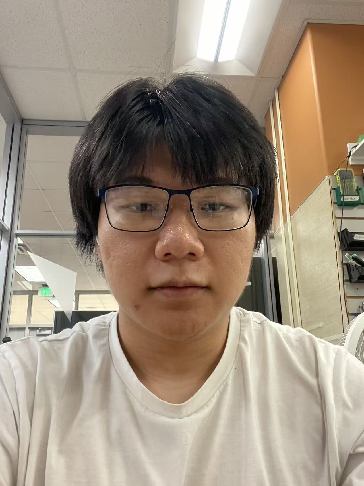

Personal Portfolio Website
I am building this portfolio website as part of my MI349 web development Lab. This project uses HTML5 to create the structure and content of the website.
Information Science / Information Technology Minor

Hey! My name is Zilong. I am majoring in Information Science and minoring in Information Technology at Michigan State University.
I like working out, learning things I do not know or understand, and joining different events to meet different kinds of people.
I am an Information Science student at Michigan State University. I am interested in AI and modern technology. Recently, I have been curious about many things that I do not know or understand yet. I enjoy learning about new technology and trying to understand how it works.
Outside of class, I like to stay active and try different activities. I often go to the Rec Center to work out. Volleyball and badminton are two sports I have been trying recently. I also sometimes attend different club events on campus. For example, during the Mid-Autumn Festival, there are many events organized by Asian student clubs that I may join.
I also enjoy checking out clubs that my friends recommend, such as tabletop game clubs. I think joining different events is a good way to meet people and try things that I have not done before.
I am also interested in learning about research at MSU. I do not always understand what researchers are working on when I first hear about their research, which actually makes me more curious. I would like to learn more about how professors and students do research and what kinds of questions they are trying to answer.
I am studying at Michigan State University.
I am building this portfolio website as part of my MI349 web development Lab. This project uses HTML5 to create the structure and content of the website.
In this project, I used Chrome DevTools to learn how a webpage loads and how different resources are used by a website.
I have practiced creating webpages using HTML, GitHub, and Netlify. These projects have helped me become more comfortable with basic web development.
You can contact me by email.
zhuang36@msu.edu